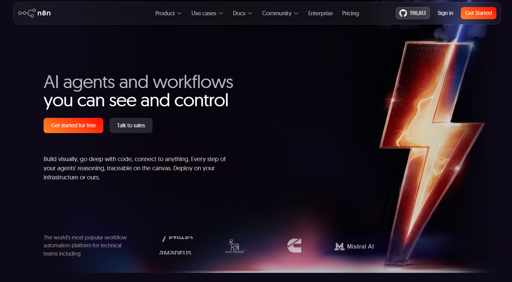
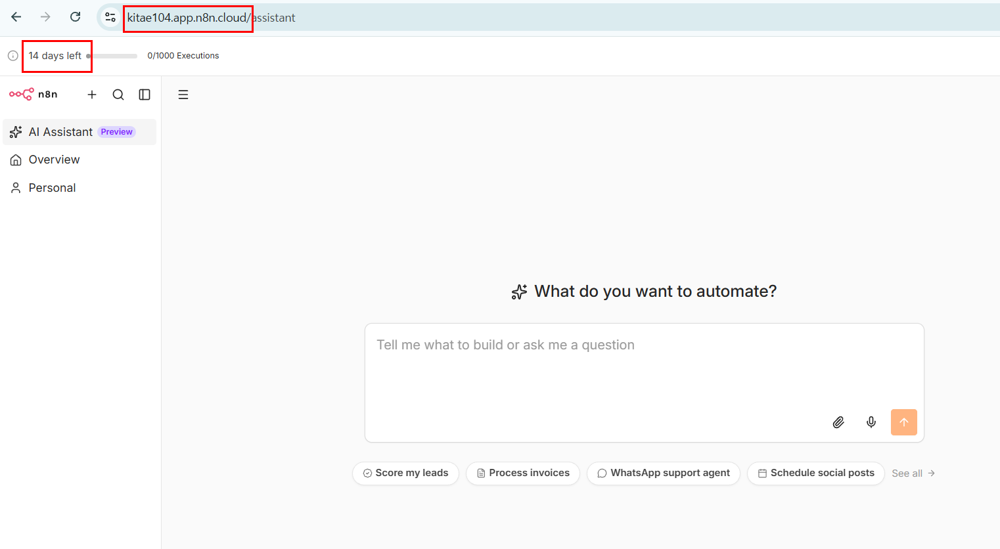
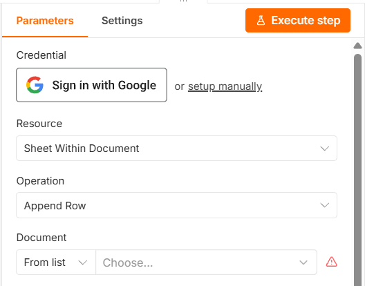

설치 없음 · 14일 무료 체험 후 유료 · 구글 연결이 가장 쉬움 ·
내 컴퓨터를 꺼도 자동화는 계속 동작 · 체험이 끝나면 작업 공간이
삭제되므로 그 전에 워크플로우를 내려받아 두어야 함
② 내 컴퓨터에 설치
설치 필요 · 비용 없음 · 구글 연결을 직접 설정해야 함(가장 번거로움) ·
컴퓨터를 끄면 자동화도 멈춤 · 기간 제한 없이 계속 사용
고르기 어렵다면
수업 중에는 ①을 쓰세요. 회원가입 몇 분이면 끝나고, 구글 연결도
버튼 한 번으로 됩니다. 실습은 이틀이면 끝나므로 14일 무료 체험으로
충분합니다.
수업이 끝난 뒤 오래 쓸 생각이 확실하다면②가 비용이 들지
않습니다. 다만 구글 연결을 직접 설정해야 하고, 컴퓨터를 끄면 자동화도
멈춘다는 점을 감안하세요.
방법 ① n8n 클라우드로 접속하기
n8n을 만든 회사가 직접 운영하는 서버를 빌려 쓰는 방식입니다. 회원가입만 하면
내 전용 n8n 주소가 하나 만들어집니다. 설치할 것도, 명령어를 입력할 일도
없습니다.
가입 페이지 열기
브라우저에서 https://n8n.io에 접속하면 첫 화면
왼쪽, 큰 제목(AI agents and workflows you can see and
control) 바로 아래에 주황색 Get started for free
버튼이 보입니다. 이것을 누릅니다.
맨 위 검은 띠 오른쪽 끝의 주황색
Get Started 버튼을 눌러도 같은 곳으로 갑니다. 이미 계정이
있다면 그 왼쪽의 Sign in입니다. 화면 문구와 배치는
n8n 쪽에서 수시로 바뀌므로 그림과 조금 달라도 괜찮습니다.
[그림 접속-1] n8n 홈페이지의 무료 시작 버튼

계정 만들기
이메일과 비밀번호를 입력하거나, 구글 계정으로 가입합니다. 준비물 ①에서
만든 그 구글 계정으로 가입하면 나중에 헷갈리지 않습니다.
신용카드는 필요 없습니다. 체험 기간에는 카드 등록 없이
쓸 수 있습니다.
이메일 인증하기
가입한 주소로 온 메일을 열어 확인 링크를 누릅니다. 메일이 보이지 않으면
스팸함을 확인하세요.
내 n8n 주소 확인하기
가입이 끝나면 내계정이름.app.n8n.cloud 형태의
나만의 주소가 만들어지고 곧바로 n8n 화면이 열립니다. 브라우저
주소창에 그 주소가 그대로 보입니다. 즐겨찾기에 넣어두세요. 다음부터는 이
주소로 바로 들어갑니다.
앞부분(내계정이름)은 사람마다
다릅니다. 교재 그림에 보이는 주소와 내 주소가 다른 것이 정상입니다.
워크플로우 목록 화면으로 가기
처음 열리는 화면은 What do you want to automate?라고
묻는 AI 어시스턴트 화면입니다(주소도 /assistant로
끝납니다). 여기에 하고 싶은 일을 적으면 AI가 대신 워크플로우를 만들어주지만,
우리는 직접 만들 것이므로 이 화면은 쓰지 않습니다. 왼쪽 메뉴에서
AI Assistant 바로 아래의
Overview를 누르면 수업에서 쓸 워크플로우 목록
화면이 나옵니다.
화면 맨 위에 14 days left와
0/1000 Executions가 보입니다. 각각 남은 체험
기간과 지금까지 워크플로우를 실행한 횟수입니다. 실습 이틀 동안
1000회를 쓸 일은 없습니다.
[그림 접속-2] 가입 직후 열린 내 n8n 클라우드 화면 — 주소창의 내 전용 주소와 14 days left

그림의 주소는 kitae104.app.n8n.cloud이지만
앞부분은 사람마다 다릅니다. 왼쪽 메뉴의 Personal은 내
개인 작업 공간으로, 01강에서 워크플로우를 만들 곳입니다.
체험 기간이 끝나기 전에 워크플로우를 내려받아 두세요
무료 체험은 14일입니다. 기간이 끝나고 유료로 전환하지 않으면 작업 공간이
삭제됩니다. 만든 워크플로우는 각각 화면 오른쪽 위 메뉴에서 파일로 내려받을 수
있으니, 체험이 끝나기 전에 받아두면 나중에 다른 곳에 그대로 불러올 수 있습니다.
실습 자체는 이틀이면 끝나므로 수업용으로 쓰기에는 넉넉합니다.
방법 ② 내 컴퓨터에 설치해서 쓰기
내 컴퓨터 안에 n8n을 띄워놓고, 내 컴퓨터를 가리키는 주소로 접속하는
방식입니다. 비용이 전혀 들지 않고 기간 제한도 없습니다. 대신 처음 한 번은
검은 화면(명령 프롬프트)에 글자를 입력해야 합니다.
시작하기 전에 두 가지를 알아두세요
① 컴퓨터를 끄면 자동화도 멈춥니다. 2일차에 만드는 "매일 아침 9시
브리핑"(P2)이나 "아침 7시 날씨"(P4)는 그 시각에 컴퓨터가 켜져 있고 n8n이
돌아가고 있어야 실행됩니다. 퇴근하며 컴퓨터를 끄면 다음 날 아침 알림은
오지 않습니다.
② 기관 PC에는 설치가 막혀 있을 수 있습니다. 보안 정책상 프로그램
설치가 차단된 컴퓨터라면 이 방법은 쓸 수 없습니다. 그럴 때는 방법 ①을
쓰세요.
②-1. nvm으로 Node.js 설치하기
n8n은 Node.js라는 프로그램 위에서 돌아갑니다. n8n을 설치하기 전에
이것을 먼저 설치해야 합니다.
Node.js는 홈페이지에서 설치 파일을 받아 바로 깔 수도 있지만, 여기서는
nvm을 거쳐 설치합니다. nvm은 "Node.js 버전 관리자"입니다. 나중에 n8n이
다른 버전을 요구할 때 명령 한 줄로 갈아끼울 수 있고, 지울 때도 컴퓨터에
찌꺼기가 남지 않습니다. 처음에 조금 더 손이 갈 뿐, 나중이 훨씬 편합니다.
nvm 내려받기
브라우저에서
https://github.com/coreybutler/nvm-windows/releases에
접속해, 맨 위에 있는 최신 버전의 nvm-setup.exe를
내려받습니다.
파일이 여러 개 보입니다.
nvm-setup.exe가 설치 파일입니다.
nvm-noinstall.zip은 다른 용도이니 받지 마세요.
윈도우용 nvm은 맥·리눅스용 nvm과 만든 사람이 다릅니다. 윈도우에서는 반드시
이 주소에서 받으세요.
nvm 설치하기
내려받은 파일을 실행하고 동의·다음 버튼만 눌러 끝까지 진행합니다.
설치 위치를 묻는 화면이 두 번 나오지만 기본값 그대로 두면 됩니다.중간에 관리자 권한을 묻는 창이 뜨면 허용합니다. 이 창에서
막힌다면 기관 PC 보안 정책 때문이므로 방법 ①로 가세요.
명령 프롬프트를 관리자 권한으로 열기
키보드 Windows 키를 누르고
cmd라고 입력한 뒤, 엔터 대신
Ctrl + Shift +
Enter를 누릅니다. 허용을 묻는 창이 뜨면 예를
누릅니다. 검은 화면이 하나 열립니다.
이 검은 화면이 "명령 프롬프트"입니다. 겁먹을 것 없습니다.
아래에서 몇 줄만 입력합니다. nvm은 관리자 권한이 있어야 동작합니다.
마우스 오른쪽 버튼으로 "관리자 권한으로 실행"을 눌러도 같습니다.
nvm이 깔렸는지 확인하기
검은 화면에 아래를 입력하고 엔터를 칩니다.
nvm version
1.2.2처럼 숫자가 한 줄 나오면 설치된 것입니다.
"명령어가 아닙니다"라고 나오면 이 검은 화면을 닫고 새로 열어서
다시 해보세요.
Node.js 설치하기
아래를 입력하고 엔터를 칩니다.
nvm install lts
인터넷에서 Node.js를 받아 설치합니다. 몇 분 걸립니다. 글자가
올라가다 멈추고 다시 입력할 수 있게 되면 끝난 것입니다.
lts는 "오래 안정적으로 지원되는
판"이라는 뜻입니다. 최신판(Current)은 n8n과 맞지 않을 수 있어 쓰지
않습니다.
설치한 버전을 쓰겠다고 지정하기
설치만으로는 아직 쓸 수 없습니다. 아래를 입력해 "이 버전을 쓰겠다"고
지정해야 합니다.
nvm use lts
Now using node v22.…처럼 나오면 됩니다.
lts를 모르는 값이라고 하면
nvm list를 입력해 방금 설치된 버전 번호(예:
22.20.0)를 확인한 뒤,
nvm use 22.20.0처럼 번호를 그대로 넣어
입력하세요.
제대로 됐는지 확인하기
아래 두 줄을 차례로 입력합니다.
node -v
npm -v
v22.20.0, 10.9.3처럼
버전 번호가 각각 한 줄씩 나오면 준비가 끝난 것입니다.
맥을 쓴다면
윈도우용 nvm은 맥에서 동작하지 않습니다. 맥에서는 터미널을 열고 아래 한 줄로
nvm을 설치한 뒤, 터미널을 새로 열어
nvm install --lts와
nvm use --lts를 차례로 입력하세요.
맥에는 관리자 권한(sudo)이 필요하지 않습니다.
그다음 순서는 아래 ②-2와 같습니다.
②-2. n8n 실행하기
명령 프롬프트 열기
위에서 쓰던 검은 화면을 그대로 써도 되고, 새로 열어도 됩니다. 새로 열
때는 Windows 키를 누르고
cmd를 입력한 뒤 엔터를 칩니다.
여기서부터는 관리자 권한이 필요 없습니다. 앞에서
nvm use로 지정해두었기 때문에 새로 연 창에서도
Node.js가 그대로 잡힙니다.
한 줄 입력하기
검은 화면에 아래를 그대로 입력하고 엔터를 칩니다.
npx n8n
설치할지 묻는 질문이 나오면 y를 입력하고 엔터를
칩니다. 처음 한 번은 몇 분 걸립니다. 글자가 계속 올라가는 동안
기다리세요.
주소 확인하고 접속하기
글자가 멈추고 아래와 비슷한 줄이 보이면 준비가 끝난 것입니다.
Editor is now accessible via:
http://localhost:5678
브라우저를 열고 주소창에
http://localhost:5678을 입력해 접속합니다.
localhost는 "이 컴퓨터"라는 뜻의
약속된 이름입니다. 인터넷 어딘가가 아니라 지금 쓰고 있는 바로 이
컴퓨터를 가리킵니다.
첫 계정 만들기
처음 접속하면 이메일·이름·비밀번호를 입력하라는 화면이 나옵니다. 입력해
계정을 만듭니다.
이 정보는 내 컴퓨터 안에만 저장됩니다. 어디로도
전송되지 않으니 편한 값으로 정하되, 비밀번호는 잊지 않게 적어두세요.
②-3. 끄고 다시 켜기
끄기
검은 화면을 클릭한 뒤 Ctrl 키를 누른 채
C를 누릅니다. 또는 검은 화면 창을 그냥 닫아도
됩니다.
다시 켜기
명령 프롬프트를 다시 열고 npx n8n을 다시 입력합니다.
두 번째부터는 금방 뜹니다. 만들어둔 워크플로우는 그대로 남아 있습니다.
nvm 설치와 nvm use는 처음 한 번만 하면
됩니다. 컴퓨터를 껐다 켜도 지정은 그대로 남습니다.
검은 화면을 닫으면 n8n도 꺼집니다
n8n을 쓰는 동안에는 검은 화면을 닫지 말고 그대로 두세요. 최소화해서
작업 표시줄에 내려두는 것은 괜찮습니다. 창을 닫으면
http://localhost:5678에 접속해도 화면이 뜨지 않습니다.
부서에 IT 담당자가 있다면
Docker라는 방식으로 설치하면 컴퓨터를 켤 때마다 n8n이 자동으로 함께 켜지도록
해둘 수 있습니다. 명령 한 줄로 끝나지만 Docker를 먼저 설치해야 하므로,
담당자에게 n8n docker 설치를 문의해보세요. 실습 내용은
어느 쪽이든 똑같습니다.
⚠ 구글 연결은 방법마다 다릅니다 — 꼭 읽어주세요
1일차 3강부터 구글 시트·Gmail·캘린더를 연결합니다. 그런데 이 연결 방법이
위 두 가지 중 무엇을 쓰느냐에 따라 달라집니다. 미리 알아두지 않으면 3강에서
"화면이 교재와 다른데요?" 하고 막히게 됩니다.
① n8n 클라우드를 쓴다면 — 가장 쉽습니다
자격증명 만들기 창에서 구글 계정으로 로그인하는 버튼이 바로 보입니다.
누르고 로그인한 뒤 권한을 허용하면 끝입니다. 3강 본문에 적힌 그대로입니다.
② 내 컴퓨터에 설치해 쓴다면 — 한 가지가 더 필요합니다
이 경우에는 자격증명 만들기 창에
Client ID와 Client Secret이라는
빈 칸 두 개가 먼저 나타납니다. 구글 계정으로 로그인하는 버튼은 이
두 칸을 채운 뒤에야 나타납니다.
이 두 값은 구글 클라우드 콘솔(console.cloud.google.com)에서
본인이 직접 만들어야 하는 값입니다. 어렵지는 않지만 단계가 여러
개라 처음 하면 20분 정도 걸립니다.
어떻게 하면 되나요
구글 클라우드 콘솔에서 새 프로젝트를 만들고, 쓸 서비스(Sheets·Gmail·Calendar)를
켜고, 사용자 인증 정보에서 OAuth 클라이언트 ID를 만드는 순서입니다.
이때 승인된 리디렉션 URI 칸에는 n8n 자격증명 창에 표시된
OAuth Redirect URL 값을 그대로 복사해 넣습니다.
1일차 실습만 빨리 해보고 싶다면 이 준비가 필요 없는 ① n8n
클라우드로 시작하는 편이 훨씬 빠릅니다.
[그림 접속-3] n8n 클라우드에서 본 구글 자격증명 항목 — Sign in with Google 버튼이 바로 보입니다

방법 ②(내 컴퓨터에 설치)를 쓰면 이 자리에
Sign in with Google 버튼 대신
Client ID·Client Secret 칸이 먼저
나옵니다. 버튼 옆의 or setup manually를 눌렀을 때 나오는
화면과 같습니다.
안 될 때
클라우드 가입 후 화면이 열리지 않습니다 — 이메일 인증 링크를 아직 누르지
않았을 수 있습니다. 받은편지함과 스팸함을 확인하세요.
클라우드에 접속했는데 교재와 화면이 다릅니다 — 처음 열리는
AI 어시스턴트 화면일 수 있습니다. 왼쪽 메뉴의 Overview를
누르면 교재와 같은 워크플로우 목록 화면이 나옵니다.
nvm을 모르는 명령어라고 합니다(방법 ②) — nvm을
설치하기 전에 열어둔 검은 화면에는 설치 결과가 반영되지 않습니다. 그
창을 닫고 새로 열어서 다시 입력해보세요.
nvm use에서 권한 오류가 납니다 — 관리자 권한이
없는 창입니다. 검은 화면을 닫고, Windows 키 →
cmd → Ctrl +
Shift + Enter로 다시 여세요.
npx를 모르는 명령어라고 합니다 — Node.js가
아직 지정되지 않았습니다. node -v를 입력해보고 버전이
안 나오면 관리자 권한 창에서 nvm use lts를 다시
실행한 뒤, 검은 화면을 새로 열어 입력해보세요.
주소를 입력해도 화면이 안 뜹니다(방법 ②) — 검은 화면이 아직 열려 있고
n8n이 돌아가고 있는지 확인하세요. 창을 닫았다면 다시 열어
npx n8n을 입력해야 합니다.
이미 사용 중인 포트라는 오류가 납니다 — n8n이 이미 다른 창에서 돌아가고
있습니다. http://localhost:5678로 접속해보세요. 아마
이미 켜져 있을 것입니다.
구글 연결 창에 Client ID 칸이 나옵니다 — 잘못된 것이 아닙니다. 위
구글 연결은 방법마다 다릅니다 항목을 읽어보세요. 내 컴퓨터에 설치한
경우에는 원래 이렇게 나옵니다.